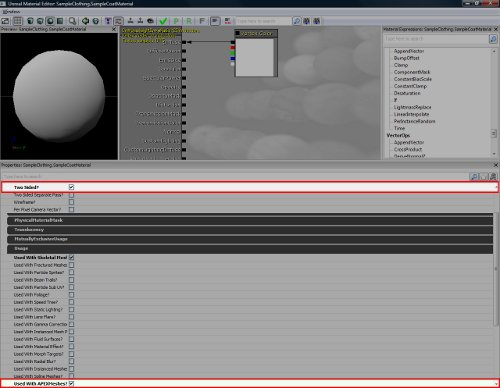
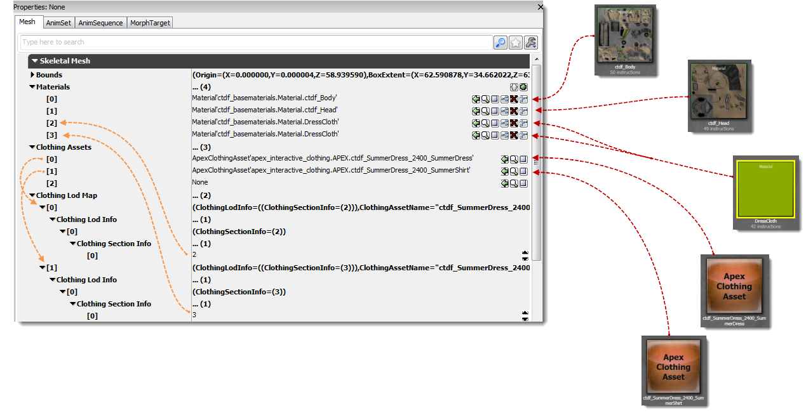
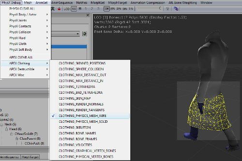
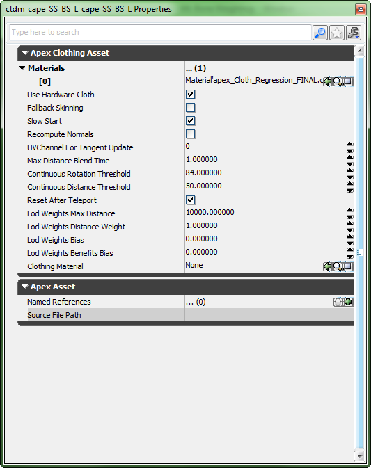
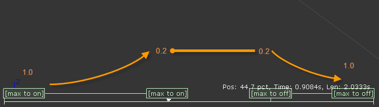
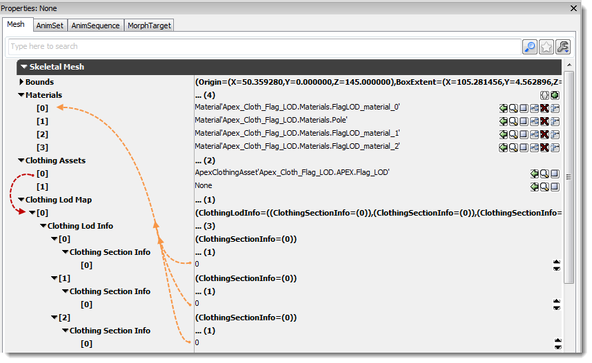
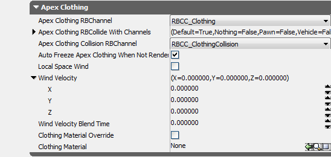

UDN
Search public documentation:
APEXClothingKR
English Translation
日本語訳
中国翻译
Interested in the Unreal Engine?
Visit the Unreal Technology site.
Looking for jobs and company info?
Check out the Epic games site.
Questions about support via UDN?
Contact the UDN Staff
日本語訳
中国翻译
Interested in the Unreal Engine?
Visit the Unreal Technology site.
Looking for jobs and company info?
Check out the Epic games site.
Questions about support via UDN?
Contact the UDN Staff
UE3 의 APEX Clothing
문서 변경내역: David Schoemehl 작성. 홍성진 번역.
개요
툴 구하기
튜토리얼
임포트하기
- Clothing 을 포함할 애셋에 대한 스켈레탈 메시 및 애니메이션 (.psk 및 .psa) 파일을 임포트합니다.
- 머티리얼 에디터 에서 Two Sided? 와 Used With APEXMeshes? 플랙을 설정한 머티리얼을 만듭니다.

- Max/Maya Clothing 플러그인으로 만든 .apx 파일을 임포트합니다.
- 주: 익스포트할 때 옵션을 "APEX ARM" 이 아니라! "APEX Clothing" 으로 하셔야 합니다!
- AnimSet 뷰어를 열어 Apex Clothing Asset 을 메시에 연결하십시오.
- 기본적으로 딱 하나의 클로딩 슬롯만 사용가능합니다. 여기에 APEX Clothing 노드를 추가하면 빈 슬롯이 새로 생성됩니다. 여러 클로딩 애셋을 추가하려면 1 슬롯은 항상 비어 있어야 합니다.
- Skeletal Mesh 아래 Clothing LOD Map 섹션이 새로 생겼습니다. 이 섹션은 Clothing Asset 을 그래픽 머티리얼에 연결하는 데, LOD 를 관리하는 데 사용됩니다.
- APEX Clothing Asset 에 그래픽 머티리얼을 연결하려면, 해당 Clothing Asset 의 Clothing Section Info 를 원하는 Material ID 로 설정합니다. 그러면 그 메시 섹션의 그래픽 버전을 APEX Clothing Asset 으로 대체합니다.

- Clothing Asset Material 을 사용하세요. Anim Set Viewer 의 Skeletal Mesh 에서 하단에 보면 이제 Apex Clothing 섹션이 있습니다. 이를 통해 그래픽 머티리얼을 APEX Clothing Asset 에 정의된 대체 그래픽 머티리얼로 덮어쓸 수 있습니다. Clothing Asset 마다 여러 개의 머티리얼을 지원하며, 기본은 체크되지 않은 상태입니다. 즉 APEX Clothing Asset 은 기본적으로 스켈레탈 메시의 머티리얼을 상속받는 다는 뜻입니다. 이 옵션을 체크하면 주어진 스켈레탈 메시에 있는 모든 Clothing Material 들이 각자의 Clothing Asset 으로 덮어쓰이게 됩니다.
 .
.
- 덮어쓰기가 켜졌으면, APEX Clothing 노드의 머티리얼을 설정합니다. (아래 애셋 세팅 부분의 이미지 참고)
- PhysX Debug 메뉴를 사용하여 APEX Clothing의 다양한 면을 볼 수 있습니다.

애셋 세팅
- Continuous Rotation Threshold (연속 회전 한계치) - 캐릭터가 너무 빨리 회전하는 경우 Clothing과의 콜리전 문제가 생길 수 있습니다. (예로) 캐릭터가 한 프레임에 딱 180도 돌았다 칩시다. 이 한계치를 설정해 두면 너무 급격한 회전 시뮬레이션 없이 새 위치로 강제 이동됩니다.
- Continuous Distance Threshold (연속 거리 한계치) - 캐릭터가 한 프레임에 비정상적으로 멀리 이동한 경우, 비현실적인 물리 시뮬레이션이 생기게 되어, Clothing 역시도 비정상적으로 늘어지게 됩니다. 이 한계치를 설정해 두면 천에 힘을 가하지 않고 새 위치로 텔레포트시킵니다.
- Reset After Teleport (텔레포트 이후 리셋) - 텔레포트 발생 이후 천 자체를 리셋시키는 플랙입니다. 천을 스킨된 포즈로 되돌려놓고서 시뮬레이션을 시작하는 것입니다. 플레이어를 다른 오브젝트 옆으로 텔레포트시킬 때, 천이 극적인 상황에 있던 상태라 다른 것을 관통해 버리는 상황을 피할 수 있습니다.

애니메이션 도중 행위 제어하기 (Clothing Choreograph)
 ClothingMaxDistanceScale Anim Notify 는 항상 쌍으로 사용해야 원하는 값으로 부드럽게 블렌드 인한 다음, 애니메이션을 빠져나올 때 기존 값으로 블렌드 아웃할 수 있습니다.
ClothingMaxDistanceScale Anim Notify 는 항상 쌍으로 사용해야 원하는 값으로 부드럽게 블렌드 인한 다음, 애니메이션을 빠져나올 때 기존 값으로 블렌드 아웃할 수 있습니다.

Graphical LOD
- DCC 툴에서 LOD 를 가진 Clothing 을 제작하고서, APEX Clothing Asset 을 Skeletal Mesh 메시에 (위에 언급한 방식 그대로) 연결하고자 할 때, 해당 Clothing Asset 슬롯에 대한 Clothing LOD Map 은 APEX Clothing Asset 에 LOD 가 몇이나 있든지 그것으로 채웁니다. 다음 예제에는 LOD 가 셋 있습니다.
- 각 레벨에 대해 (위에 언급한) Clothing Section Info 를 설정합니다.
- Clothing LOD 에 대해 그래픽 머티리얼을 덮어쓰고자 한다면, Skeletal Mesh 의 LOD Info 섹션에 있는 Material Override 를 사용하면 됩니다.

바람
- Wind Velocity Blend Time 바람 속도 블렌드 시간 - Clothing 버텍스의 목표 속도를 설정할 수 있는 세팅입니다. Clothing이 목표 속도에 도달하는 데 여기 설정된 기간만큼 걸립니다. 값이 .01 이라면 반응이 빠릅니다. 0.0 이라면 바람을 끕니다.
- Wind Velocity Vector 바람 속도 벡터 - 바람의 방향과 세기입니다.

Clothing 랙 꼼수
- 어태치먼트에 따른 랙 방지하기 - 스크립트의 어태치먼트를 통해 붙일 때 클로딩에 랙이 발생한다면, 해당 SkeletalMeshComponent 의 bForceUpdateAttachmentsInTick 옵션을 참으로 설정해 보십시오. 그러면 클로딩 컴포넌트 업데이트가 Tick 에 한 번, UpdateTransform 이 호출될 때 한 번, 한 프레임에 총 두 번 이루어지게 만듭니다. 약간의 비용이 들긴 하지만, 액터 이동 후 클로딩이 반드시 업데이트되어 랙을 해결할 수 있을 것입니다.
- 캐릭터의 랙 - 클로딩을 가진 액터의 TickGroup 이 TG_PreAsyncWork 로 설정되었는지 확인합니다.
- 틱 순서 - 일반적인 디버깅시 로깅을 넣어 다음의 작업이 올바른 순서대로 일어나도록 할 수 있습니다. (올바른 액터인지 확인하려면 GetPathName 으로 이름을 출력하세요.)
- 프레임 시작
- 틱
- 트랜스폼 업데이트 (bFinalUpdate 설정)
- 트랜스폼 동기화
샘플
- Waving_Flag_Kinematic.max: Apex Clothing 샘플 깃발 맥스 파일